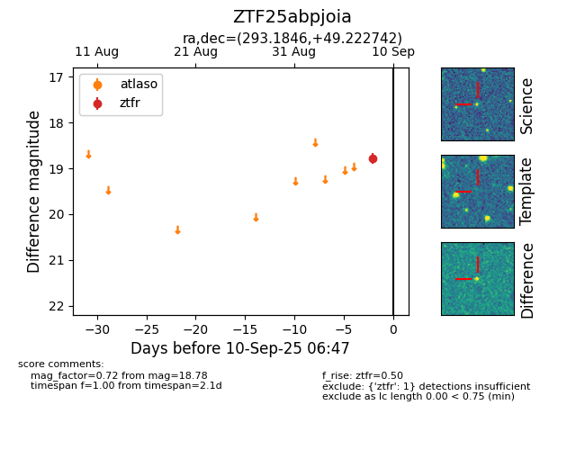

FINK: ZTF25abpjoia
Lasair: ZTF25abpjoia
ALeRCE: ZTF25abpjoia
ZTF25abpjoia (ztf,fink)
equatorial (ra, dec) = (293.1846,+49.22274)
galactic (l, b) = (81.4735,+13.95222)

last ztfg=18.08, ztfr=18.78
1 ztfg, 1 ztfr detections